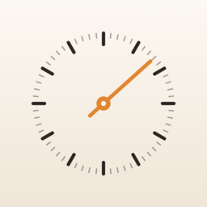

日本語 · English · Español · Português (Brasil) · Deutsch · Français · 한국어 · 简体中文 · 繁體中文
Soporte
¿Preguntas o problemas? Escríbenos cuando quieras.
ichirin.apps@gmail.com
Byoshin muestra los segundos con las actividades en vivo de iOS. Algunas cosas las define iOS y las apps no pueden cambiarlas, así que reunimos aquí las preguntas frecuentes.
¿Cómo mantengo los segundos visibles todo el día?
Usa automatizaciones de Atajos para reiniciar los segundos cada 6 horas. En la app, “Configurar siempre visible” te guía pantalla por pantalla según tu versión de iOS.
- En Atajos, toca Automatización → + → Hora del día
- Elige las 0:00, repetir Diariamente y “Ejecutar inmediatamente”
- Añade la acción “Iniciar visualización de segundos” (busca “Byoshin”)
- Crea lo mismo para las 6:00, 12:00 y 18:00 (4 en total)
¿Cómo compruebo que está configurado?
Toca “Configurar siempre visible n/4” en la pantalla principal para ver el estado de cada una de las 4 horas. Aparece un ✓ cuando la automatización se ha ejecutado a su hora.
No aparecen los segundos
Comprueba que Ajustes → Byoshin → Actividades en vivo esté activado. Si está desactivado, iOS no permite mostrar los segundos.
Después de activarlo, abre Byoshin y toca Iniciar.
La visualización desaparece tras unas 8 horas
En iOS, una actividad en vivo puede mostrarse como máximo 8 horas seguidas, por eso en todas las apps termina tras unas 8 horas.
Si creas las automatizaciones en “Configurar siempre visible”, la visualización se reinicia sola cada 6 horas y los segundos se ven todo el día. Sin automatizaciones, puedes tocar la notificación que llega poco antes del final para reiniciarla.
¿Puedo ocultarlo solo en la pantalla bloqueada?
En iOS, la Dynamic Island y la actividad en vivo de la pantalla bloqueada van juntas, y una app no puede mostrar solo una de ellas.
Por eso, Byoshin usa en la pantalla bloqueada una sola línea fina y discreta que no estorba al fondo de pantalla. En Ajustes, en “Pantalla bloqueada”, puedes elegir “Solo segundos” o “Fecha y hora”.
Lo deslicé en la pantalla bloqueada y los segundos se detuvieron
Al deslizar una actividad en vivo en la pantalla bloqueada, iOS la finaliza, y no vuelve hasta que se ejecute la siguiente automatización.
Para verla de nuevo enseguida, abre Byoshin y toca Iniciar, o usa el widget o el botón del centro de control.
Junto a la actividad en vivo de otra app, los segundos se ven más pequeños o desaparecen
Cuando hay dos o más actividades en vivo, iOS decide automáticamente cuál se muestra grande y cuál pequeña (solo como un icono redondo). Las apps no pueden elegir el orden.
La navegación, los temporizadores y similares pueden tener prioridad mientras están activos, pero cuando termina la de la otra app, los segundos vuelven a su tamaño normal.
Los segundos no aparecen en la Dynamic Island mientras Byoshin está abierta
En iOS, la actividad en vivo de una app no se muestra en la Dynamic Island mientras esa app está abierta.
Al ir a la pantalla de inicio o cambiar a otra app, aparece enseguida. Con Byoshin abierta, puedes ver los segundos en grande en la pantalla.
Parece que las automatizaciones no se ejecutan
Comprueba lo siguiente en la app Atajos:
- Está seleccionado “Ejecutar inmediatamente” (con “Ejecutar tras confirmación” no se muestra solo)
- Si la acción muestra “Abrir al ejecutar”, está desactivado
- Existen las 4 automatizaciones (0:00, 6:00, 12:00 y 18:00) y están activadas
En “Estado de siempre visible” de Byoshin puedes ver si cada hora funciona (el ✓ aparece después de la hora fijada).
¿Funciona en modelos sin Dynamic Island?
Sí. En los modelos sin Dynamic Island, los segundos se muestran como actividad en vivo en la pantalla bloqueada y en el centro de notificaciones. También puedes verlos en widgets de la pantalla de inicio y de la pantalla bloqueada.
A veces los segundos parecen desfasados un segundo
iOS dibuja los segundos a partir del reloj del iPhone. La hora de la barra de estado y las actividades en vivo se actualizan en momentos ligeramente distintos, así que pueden verse un poco desfasadas, por ejemplo justo al cambiar el minuto.
La hora en sí no está desfasada, puedes confiar en ella. Además, en modo de bajo consumo o con la pantalla atenuada, iOS puede actualizar la visualización con menos frecuencia.
¿Afecta a la batería?
iOS dibuja los segundos y Byoshin no se queda funcionando en segundo plano, así que el impacto es pequeño.
Aun así, mantener una actividad en vivo todo el día consume un poco más que no mostrarla. Puedes detenerla cuando quieras con Detener en la app.